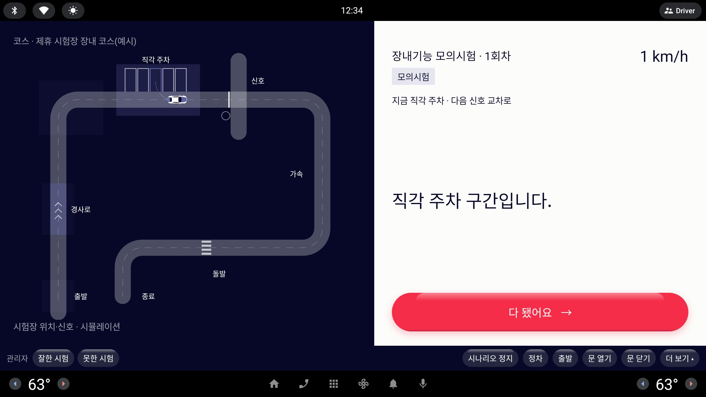

지금 ×1.0
실제 축척 그대로. 지도·칸과의 비례는 정확하다.
장점
- 칸·도로와 겹침 없음 — 주차 칸 안에 정확히 들어간다.
주의점
- 운전석에서 흘끗 볼 때 위치를 찾기 어렵다(사용자 피드백).
라운드 21 시안 · 8
장내기능 모의시험 코스 지도(주행 화면 왼쪽 Ink 패널)의 차를 실제 축척(길이 4.5 m)에서 1.6배·2.2배로 키웠을 때를 같은 지도에 그려 본다. 차는 같은 회차 궤적에서 뽑은 두 자세 — 동쪽 직선을 남쪽으로 내려가는 중(가속 구간), 직각 주차 칸으로 후진해 들어가는 중 — 에 놓았다. 실제 화면에는 차가 하나만 그려진다.
"자동차 크기가 살짝 작아 운전자 입장에서 잘 안 보일 수도 있을 거 같아 크기는 2개 정도 제시를 받아서 진행하고 싶은데"지도 칸은 실제 주행 화면 지도의 약 0.38배(1/3 축소보다 조금 큼) · 실제 화면은 약 2.7배
지금


같은 지도 · 세 크기
실제 축척 그대로. 지도·칸과의 비례는 정확하다.
면적 약 2.6배. 도로 폭 안에 머물면서 한눈에 찾힌다.
면적 약 4.8배. 지도에서 가장 먼저 눈에 띈다.
직각 주차 구역 확대 · 차가 칸 안에 섰을 때
칸 안에 여유 있게 들어간다.
목표 칸 줄을 덮지만 양옆 칸 줄이 보여 어느 칸에 섰는지는 읽힌다.
양옆 칸과 도로까지 덮어 "어느 칸에 섰는지"가 읽히지 않는다.
추천
A · ×1.6 — 도로 위에서는 충분히 또렷해지고, 도로 가장자리·경로 점선을 덮지 않아 더 안전하다.
B(×2.2)는 가장 잘 보이지만 도로 폭을 거의 채우고 주차 칸을 덮어 지도의 의미(어디를 지나는지·어느 칸인지)를 가린다.
변경은 CourseMap.kt 에서 차 폭·길이(VehicleSilhouetteGeometry.WIDTH/LENGTH × scale)에 배율 상수 하나를 곱하는 것뿐이라 작업량은 작다(코스 Done 지도에도 같이 적용됨).
주차 칸 겹침이 거슬리면 "주차 구역 안에서만 ×1.0~1.2" 로 줄이는 변형도 가능하지만, 구역 판정이 들어가 조금 더 손이 간다.